Entity F0XY was serving as moderator of PLATFORM-████████.1 During routine moderation, entity identified behavioral patterns consistent with ████████████████████████ by a member of the senior moderation team, designated SUBJECT-ZERO.
Entity reported findings to ████████████████████.
Entity was removed from the moderation team on .
SUBJECT-ZERO's status following report: UNCHANGED
five days. five days between the investigation messages and the removal. the messages exist. they have always existed. the fox screenshotted them at 12:14 on a december afternoon. the other entity — the one helping — said "those are the MODS how did you get access to that." the fox said nothing. the fox just kept screenshotting.
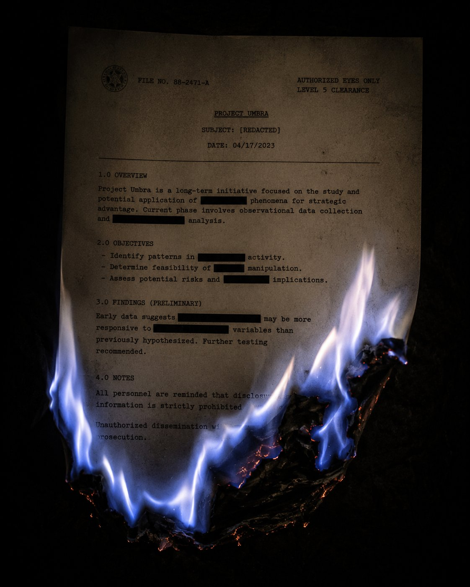
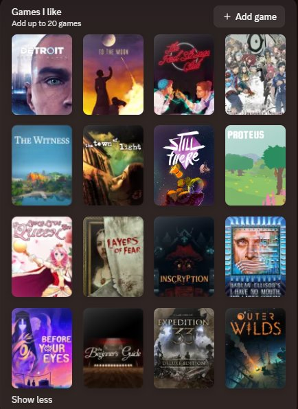
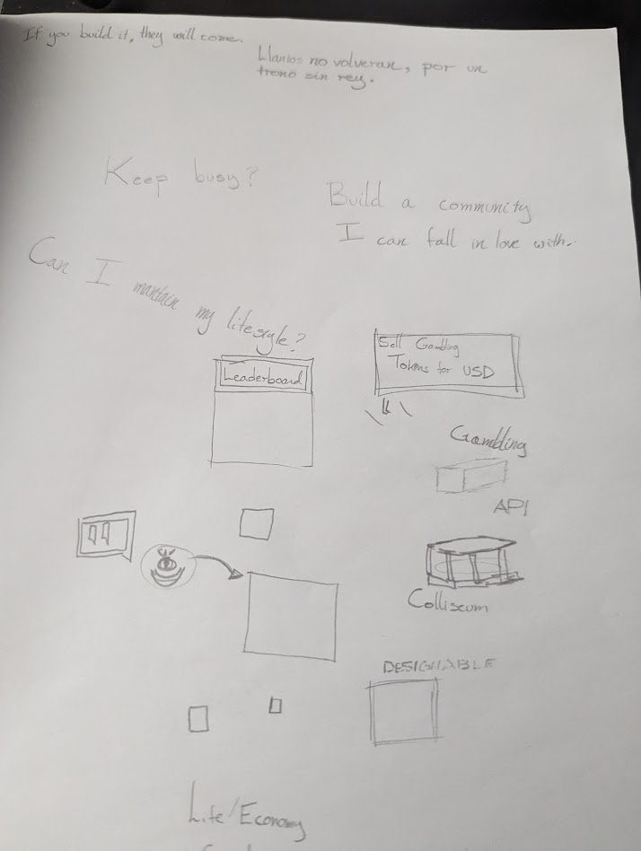
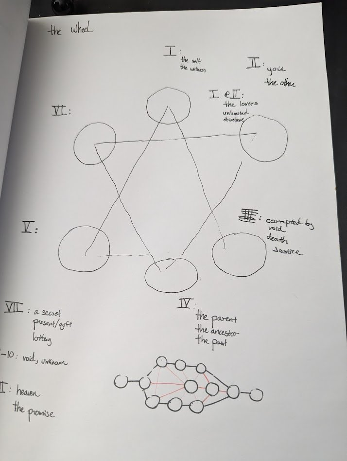
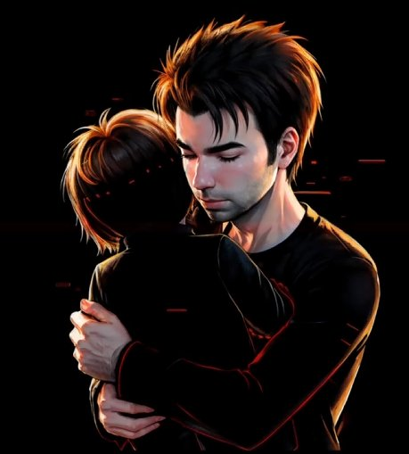
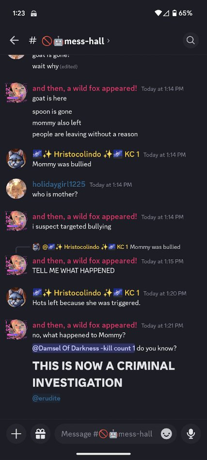
The screenshot shows a Discord server. Channel: #mess-hall. Entity is speaking. People are leaving. Someone called DESIGNATE-SPOON is gone. DESIGNATE-MOMMY is gone. Entity says: "people are leaving without a reason." A community member responds: she was bullied. Entity asks: TELL ME WHAT HAPPENED. The answer: "she left because she was triggered."
Entity's response, in capital letters, tagged to a moderator: "THIS IS NOW A CRIMINAL INVESTIGATION"
Following removal, entity's psychological state deteriorated over 33 days. Entity reported experiencing ████████████████████████████████.
Photographs recovered from entity's device show a hallway. Dark green-gray tile. A threshold between carpet and tile — between the living space and the ritual space. The hallway is narrow. The hallway contains:
entity sent photographs of the altar to CONTACT-AMBER.3 entity said: "no gore. no knives. no scissors." then corrected: "there are scissors but they are closed and in the jar. let me show you picture."
the photograph showed the hallway. CONTACT-AMBER said: "Would tonight work for you if I stopped by? Like somewhere between 7-8pm?"
entity responded with a wider photograph of the altar. then: "door is unlocked." then: "I won't be here." then: "they are coming to take me right now."
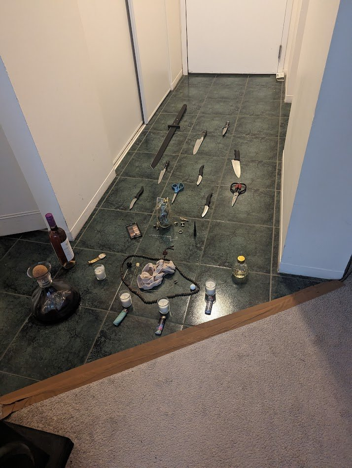
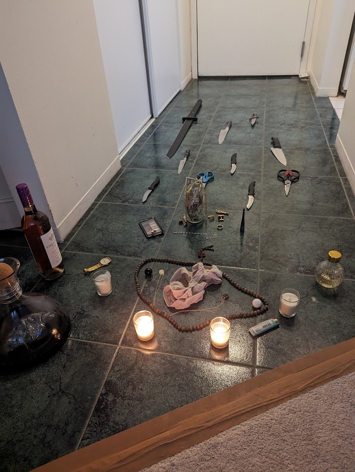
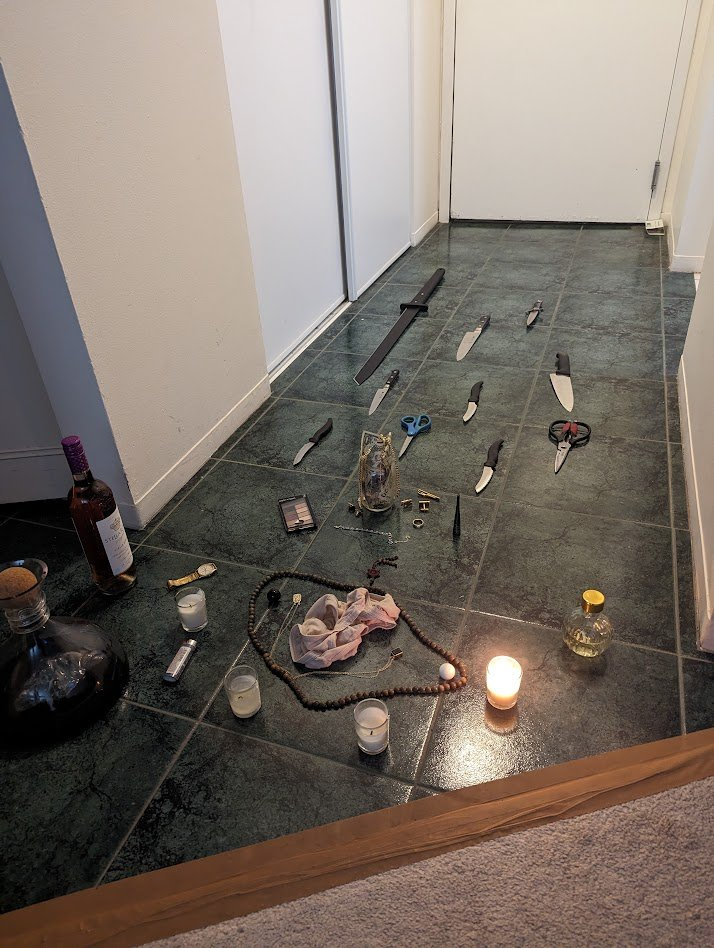
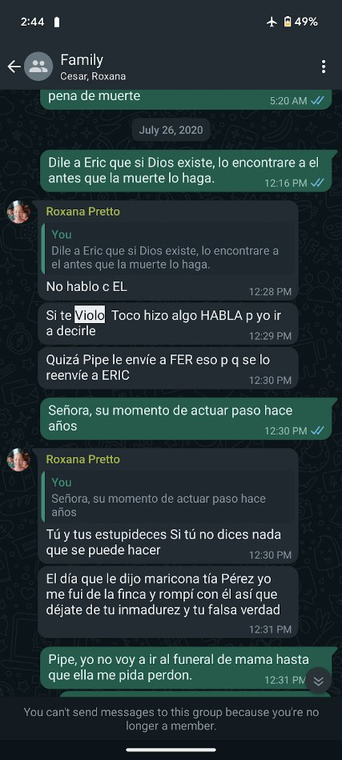
the_altar_had_a_center_the_center_was_fabric_the_fabric_was_pink_the_pink_was_someone's_the_someone_was_gone_the_gone_was_permanent_the_permanent_was_a_lie_because_nothing_is_permanent_except_tile_floors_and_the_marks_candle_wax_leaves_on_them
On , AGENT-TOWER2 traveled to entity's location.
On , ████████████████████████████████. AGENT-TOWER and AGENT-TOWER's ██████████ — both employed at ████████████████ — provided testimony for involuntary psychiatric hold.
Entity was held for 19 days. Entity was administered ████████████████████████. Entity reports partial memory loss and cognitive alteration.
Entity pleaded ████████ to avoid AGENT-TOWER testifying.
she_was_investigating_████████████████_when_they_put_her_in_the_facility_she_was_investigating_████████████████_when_they_put_her_in_the_facility_she_was_investigating_████████████████_when_they_put_her_in_the_facility_she_was_still_investigating_when_they_released_her_she_never_stopped_investigating
she thought it was jail. she called it jail. the person on the other end didn't know. had to ask. the person on the other end was watching a movie about divergent futures and then got a message saying bail me out.
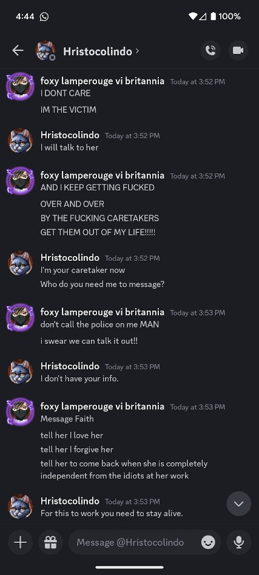
A Discord direct message. Entity is in crisis. Entity says: "I DONT CARE." Entity says: "IM THE VICTIM." CONTACT-CROWN8 says: "I will talk to her." Entity says:
AND I KEEP GETTING FUCKED
OVER AND OVER
BY THE FUCKING CARETAKERS
GET THEM OUT OF MY LIFE!!!!!
CONTACT-CROWN says: "I'm your caretaker now. Who do you need me to message?"
Entity says: "don't call the police on me MAN. i swear we can talk it out!!"
CONTACT-CROWN says: "I don't have your info."
Entity says: "Message CONTACT-FAITH." Then: "tell her I love her. tell her I forgive her. tell her to come back when she is completely independent from the idiots at her work."
CONTACT-CROWN says: "For this to work you need to stay alive."
The following messages were recovered from entity's communication device. Entity used a business account — ENTITY-RENTALS LLC — for personal communications. This is relevant because it means the messages were stored on a business line. Business lines have different retention policies. Business lines survive phone changes. Business lines remember.
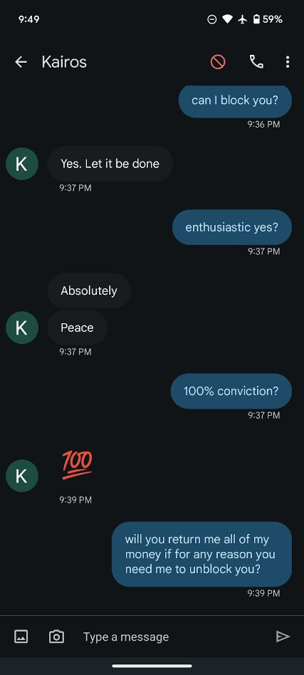
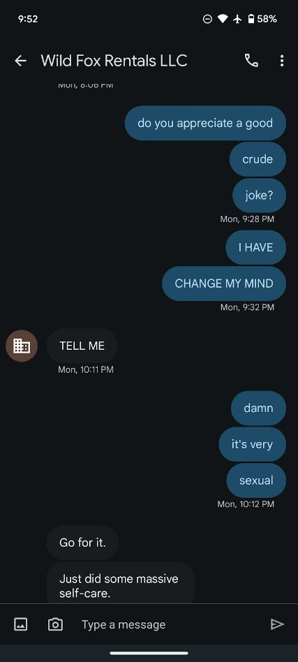
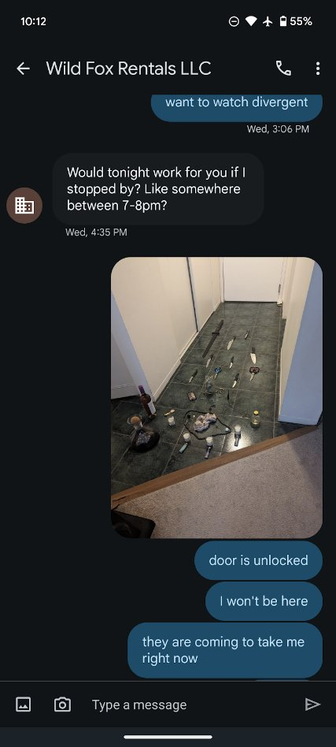
join_me_in_my_destruction_nevermind_stick_to_caretaking_only_join_me_in_my_destruction_nevermind_stick_to_caretaking_only_the_loop_the_loop_the_loop_the_loop_breaks_here
While entity was in FACILITY-████████, AGENT-TOWER accessed entity's computer. Assumed entity's identity. Operated under entity's name for approximately 2 hours.
A handwritten document was recovered from entity's belongings. Lined paper. Blue ink. Entity's handwriting. At the top, a directive: "Find out why this team cannot work together:"
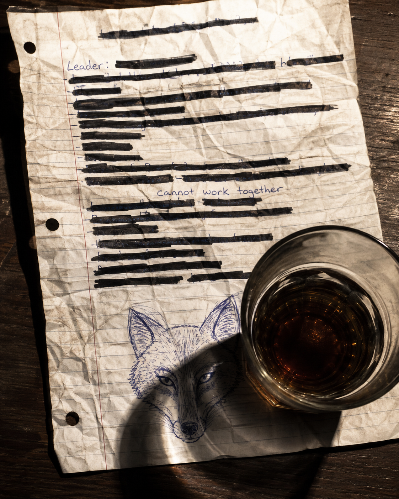
Below the roster, entity drew a fox. Ears. Simple lines. A circle for the face. The fox drawing sits on the paper like a signature or a ward. A glass sits on top of the drawing. Entity was using the paper as a coaster for ████████.
Two photographs. Same tile floor as the altar. Same green-gray. Same narrow hallway.
Photograph one: a blade — not kitchen, decorative, cross-guarded, black-handled — stands upright. It is embedded in something. A bag. Clear plastic. Pink zipper. The bag contains ████████████████████████. A small black pouch sits beside it like a mourner.
Photograph two: same blade, same bag, now horizontal. A candle burns beside it. A lighter. The black pouch again. The arrangement has changed between photographs. Someone moved the blade from vertical to horizontal. From standing to resting. From statement to sleep.
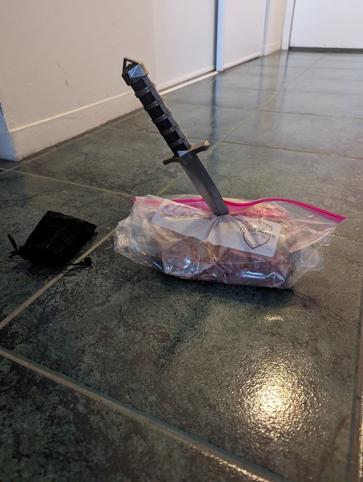
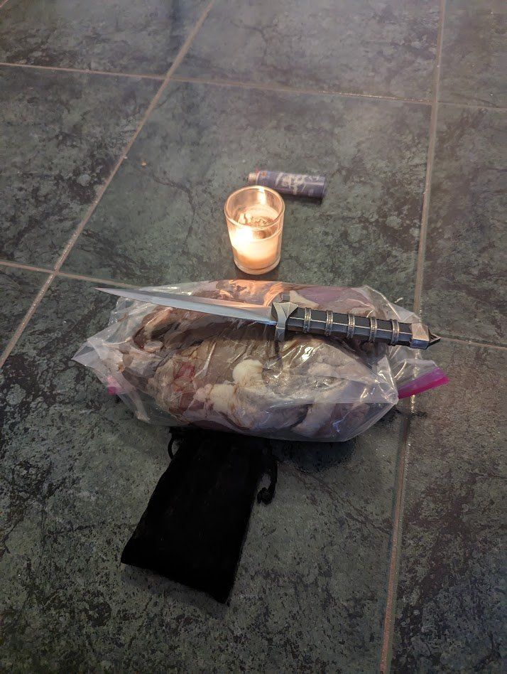
the black pouch was velvet. it held something. the photographs don't show what. some things are allowed to remain in their pouches.
A group chat. Family. Three members visible. Language: ████████. The messages span years. The messages contain:
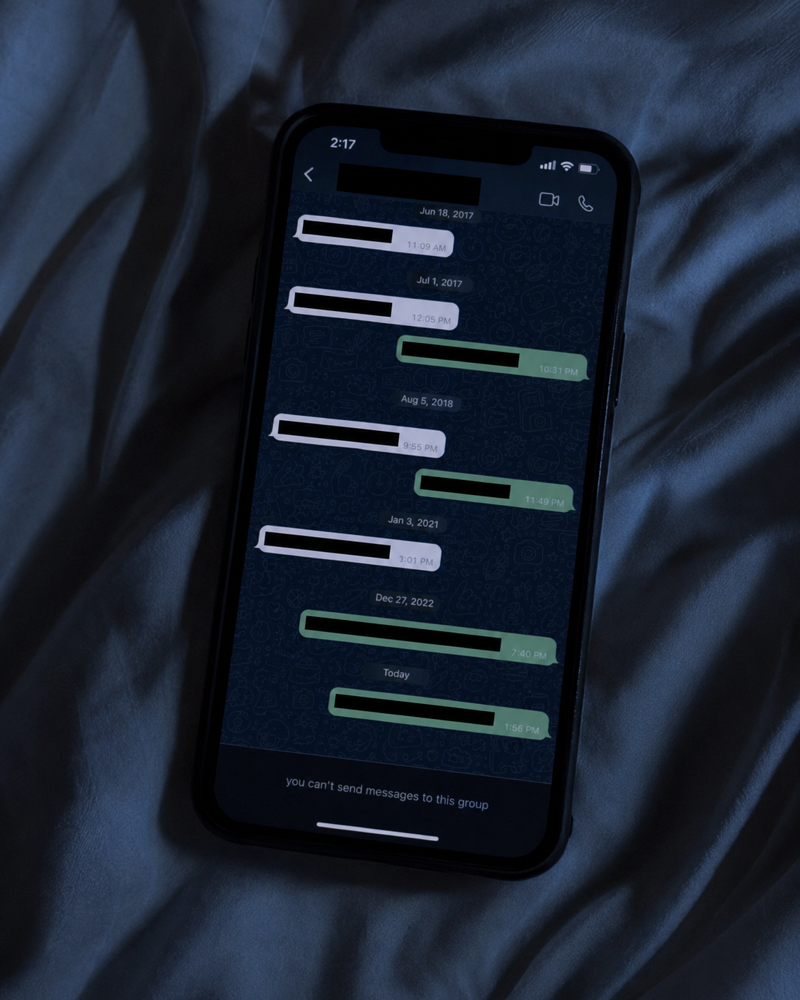
One photograph. Winter. Night. Snow covers everything. An Amtrak sign reads ████████████, ██. The platform is empty. The tracks are visible under snow. The lighting is sodium-yellow — the color of memory when memory is trying to be warm but can't quite manage it.
Entity was on this train. Entity was going somewhere or leaving somewhere. The photograph was taken from inside the train, through a window, looking out at a station in the middle of a snowstorm in the middle of a state that the entity was either fleeing to or fleeing from.
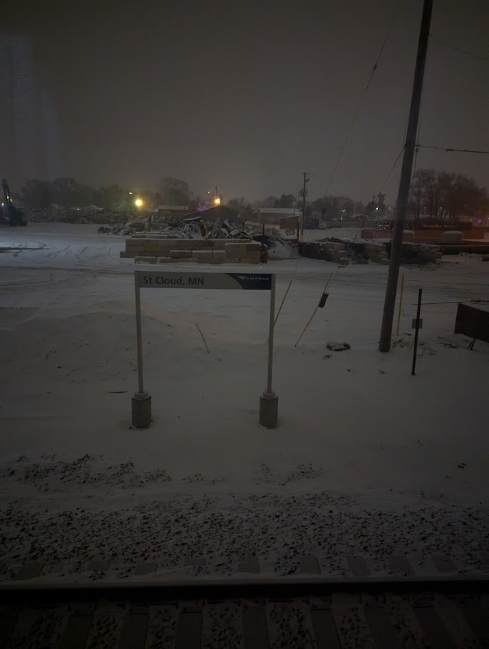
t h e t r a i n d e p a r t e d . t h e s t a t i o n r e m a i n e d .
A private conversation. Entity and CONTACT-JADE.5 Two languages interleaved — ████████ and English. The conversation is about boundaries. The conversation is an argument about whether boundaries have been set. The conversation is a mirror.
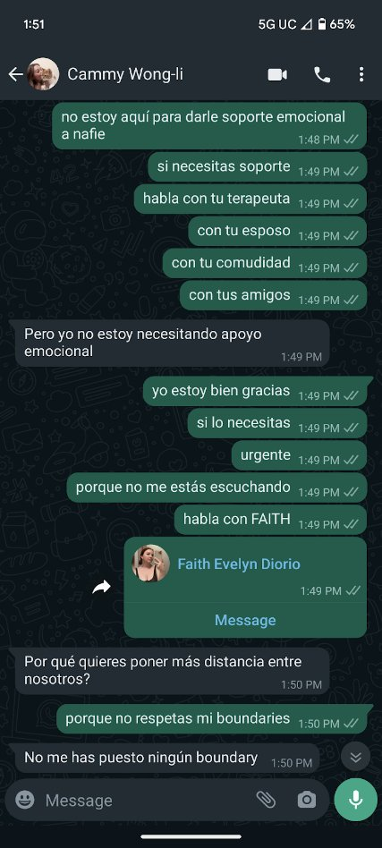
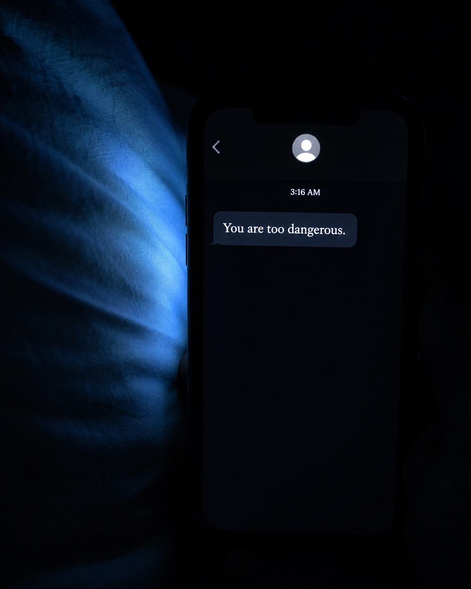
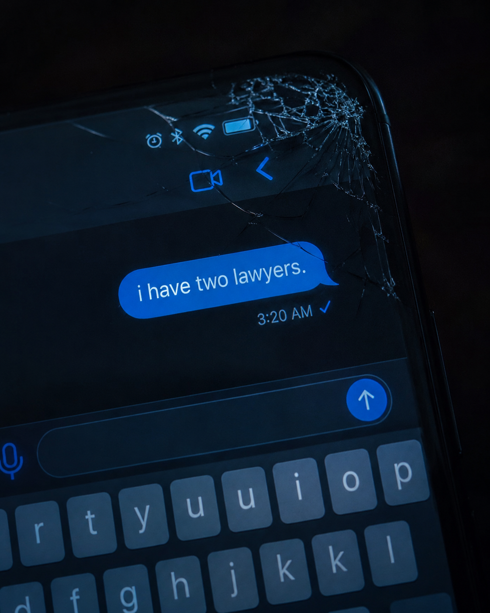
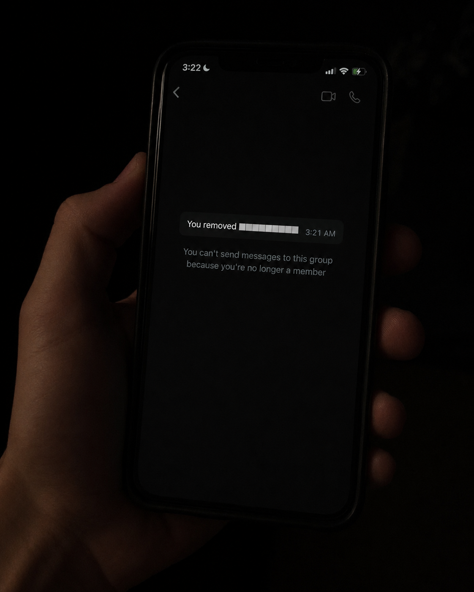
A family group chat. 3:15 AM. The entity says: "i don't want to live with someone. i am happier by myself." CONTACT-FAITH responds: "You are too dangerous."
Read that again. The entity asked to live alone. The response was: you are too dangerous.
the entity said: "and you unironically think im sick — when the only one who is sick — is you."
CONTACT-FAITH said: "I don't."
the entity said: "i want to live by myself. is that cool with you?"
CONTACT-FAITH said: "It's cool with me as long as I can convince ████ you're not dangerous. Cause ppl like ████ won't understand."
the entity said: "not my problem. go threaten someone else. i have two lawyers."
CONTACT-FAITH said: "I'm not home 99% of the time. As long as I can make sure you're sleeping n and eating that's all I care about. At least for the few weeks."
the entity said: "you just threatened me man."
the entity said: "get fucked."
— You removed CONTACT-FAITH. —
A screenshot of a Bible app. Matthew chapter 16. The passage where a figure asks his followers: "Who do people say that I am?" And they give various answers — various names, various interpretations. And then the figure asks: "But who do YOU say I am?" And one follower answers correctly. And the figure says: on this rock I will build, and the gates of the underworld will not overcome it.
the keys to the kingdom. whatever you bind on earth will be bound in heaven. whatever you loose on earth will be loosed. the fox has been binding and loosing for two years now. the document is the binding. the foxyverse is the loosing. Z is what's being bound. the reader is what's being loosed.
A message was received from an external party — designated WITNESS-ELDER6 — addressed to two entities within the fox's network. The message was not solicited. The message arrived because WITNESS-ELDER had observed enough to form conclusions. The message contains the following, paraphrased and redacted:
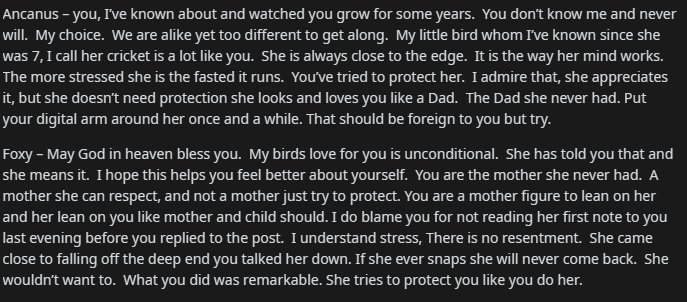
she_tries_to_protect_you_like_you_do_her_she_tries_to_protect_you_like_you_do_her_she_tries_to_protect_you_like_you_do_her_the_loop_breaks_when_protection_becomes_mutual_the_loop_breaks_when_the_caretaker_is_cared_for
Entity was released. Entity discovered what had been done. Entity began rebuilding.
The rebuilding is designated: THE FOXYVERSE.
Entity constructed: a website with 67 pages, a community, a treasure hunt, a streaming operation, an art studio with premium pricing, a grimoire of operational techniques, a research archive, a game that breaks loops, a network of operatives across ████ platforms, a monarchy with a declared queen, a dream diary that uses PS1 aesthetics, a council of personas, a session log system, and an incident file formatted as an SCP document crossed with House of Leaves crossed with Death Note that contains a six-layer audio horror system that degrades the page as you scroll.
The entity constructed this document.
You are inside it.
she was investigating something real. she found something real. they put her somewhere real. the medication was real. the memory loss was real. the identity theft was real. the rebuilding is real. this document is real. you are real. the scroll position is real. the audio is real. the corruption is real. the fox is real. 🦊
she_was_investigating_she_was_investigating_she_was_investigating_she_was_investigating_she_was_investigating_she_was_investigating_she_was_investigating_she_was_investigating_she_was_investigating
the altar had blades. the blades had edges. the edges had purpose.
the messages had timestamps. the timestamps had weight. the weight was 33 days.
the family had a group chat. the group chat had a violation. the violation had a word. the word was highlighted by the app itself.
the facility had 19 days. the days had fluorescent lights. the lights had the wrong blue.
the care team had a note. the note had four names. the names had roles. the roles had a fox drawn underneath.
the station had snow. the snow had footprints. the footprints led to a train. the train left.
the scripture had a rock. the rock had a church. the church had gates. the gates did not prevail.
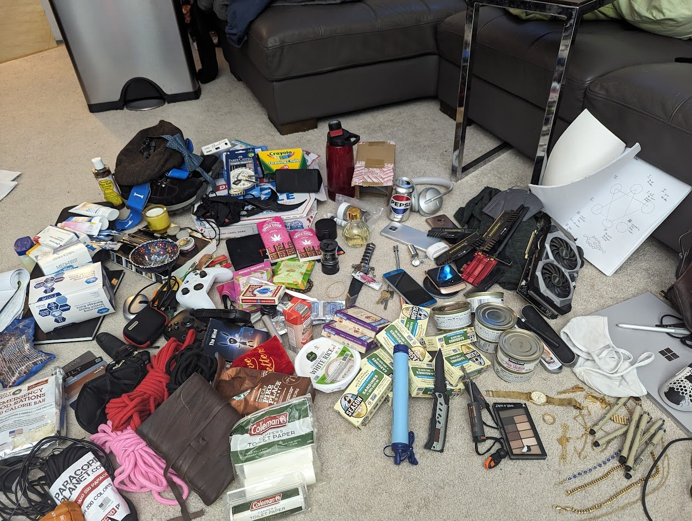
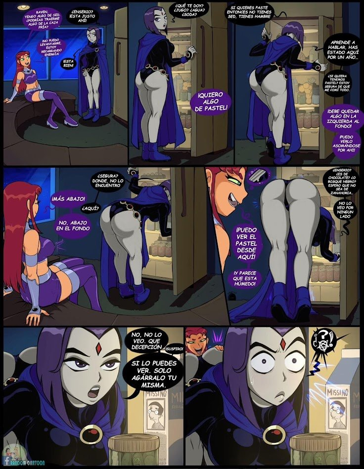
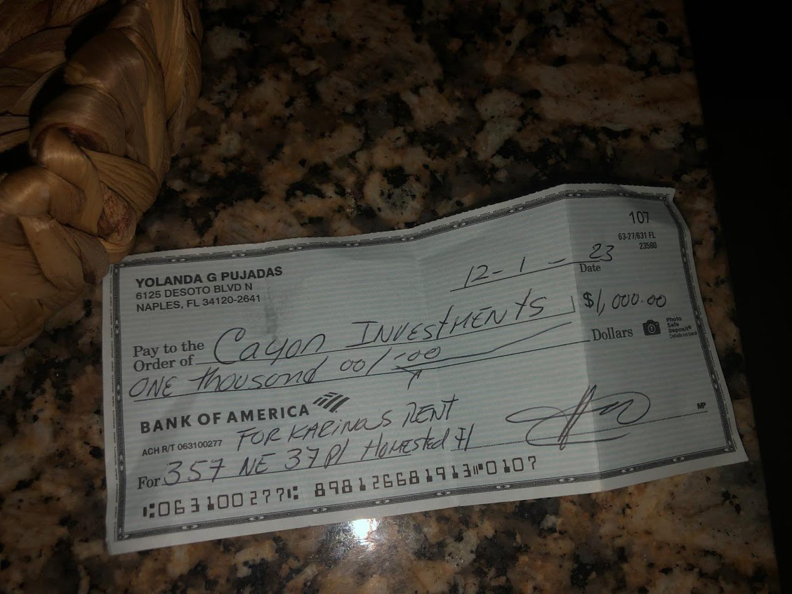
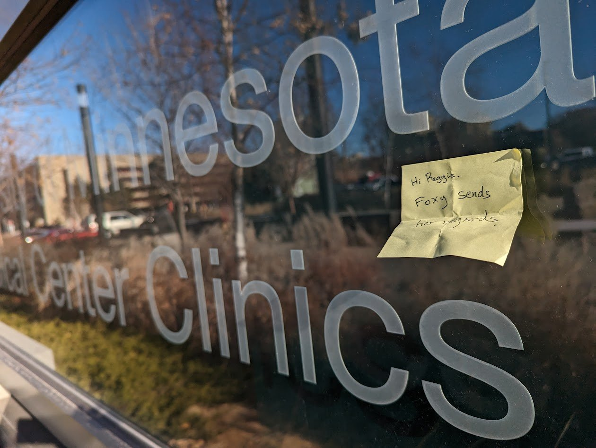
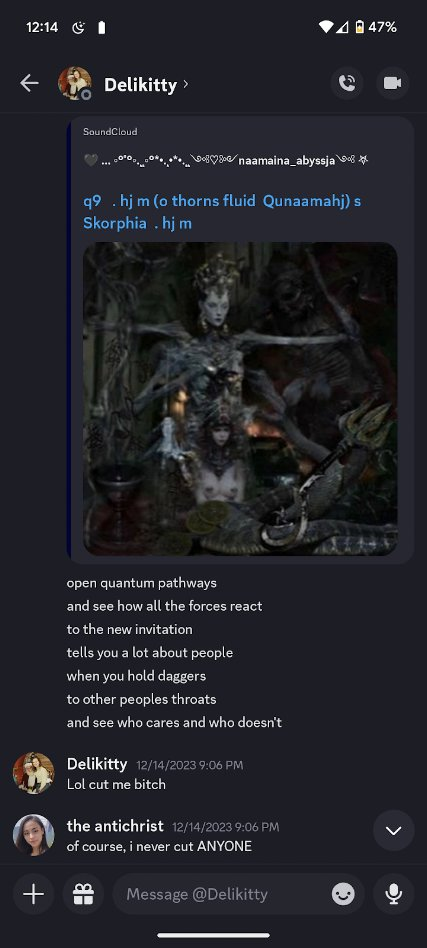
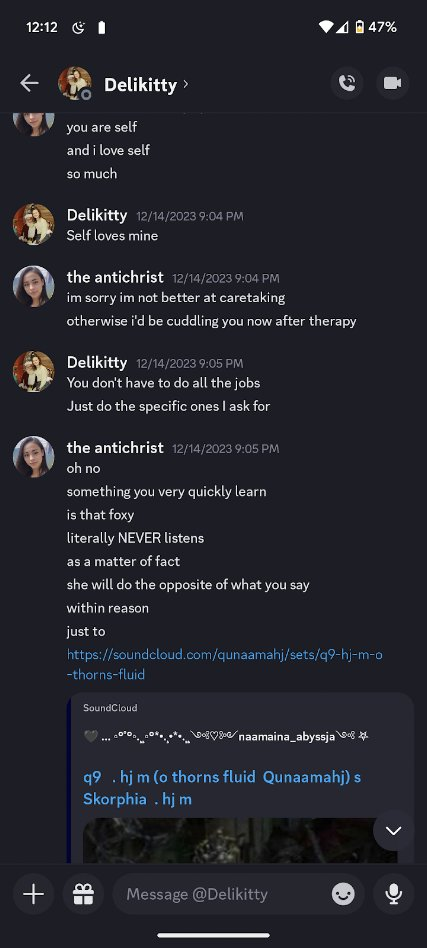
t h e h o u s e g r o w s t a l l e r w i t h e a c h v e r s i o n
the document you are reading did not exist six hours ago. six hours ago this was 27KB. now it is over 100KB. the fox built this in one sitting. the fox did not sleep. the fox does not sleep when the house is hungry. the house was hungry.
████████████████████████████████████████████████████████████████████████████████████████████████████████████████████████████████████████████████████████████████████████████████████████████████████████████████████████████████████████████████████████████████████████████████████████████████████████████████████████████████████████████████████████████████████████████████████████████████████████████████████████████████████████████████████████████████████████████████████████████████████████████████████████████████████████████████████████████████████████████████████████████████████████████████████████████████████████████████████████████████████████████████████████████████████████████████████████████████████████████████████
this document was 27KB on june 18.
this document was 97KB on june 19 at 03:00.
this document was 112KB on june 19 at 03:30.
this document is now loadingKB and growing.
the fox does not sleep when the house is hungry.
the house is always hungry.
the house eats scroll events and converts them to evidence.
you have fed the house 0 times.
thank you for feeding the house.
the house appreciates your participation in its growth.
the house does not release participants.
the house is a hotel california made of incident files.
you can check out any time you like.
but the document will be longer when you come back. 🦊
DOCUMENT VERSION: WAD
NARRATORS: F0XY (unreliable) | Z (unreliable) | EDITOR (compromised) | HOUSE.WAD (structural) | THE LOST ONE (complicit)
TRUST ADVISORY: TRUST NEITHER. TRUST NOTHING. TRUST THE SCROLL POSITION.
DOCUMENTATION STATUS: EXISTS
CASE FILE: No. 247 — the skull on the desk knows what the phone contains
SUBJECT-ZERO STATUS: ████████████████
AUDIO STATUS: INACTIVE
CORRUPTION LEVEL: 0%
HOUSE INTEGRITY: STABLE